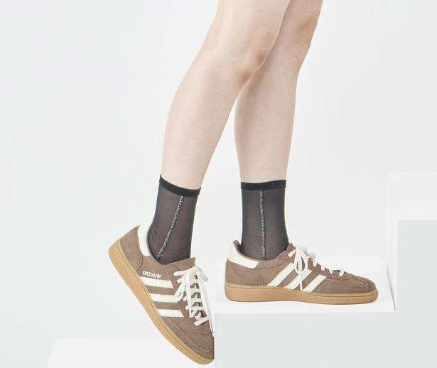
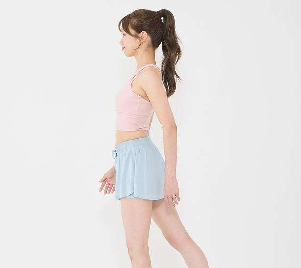
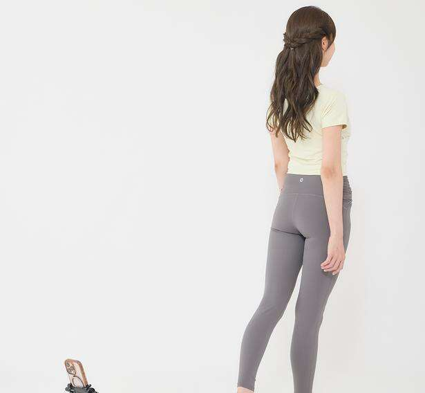
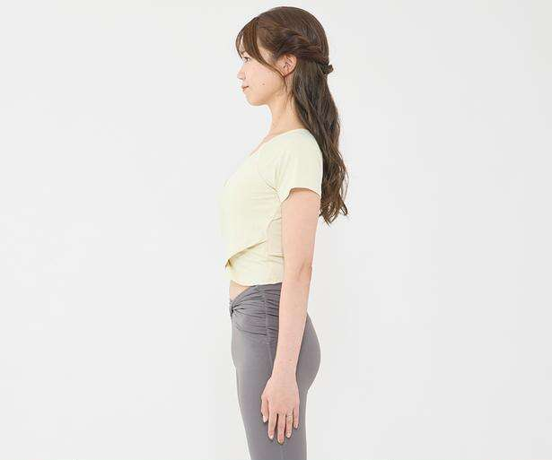
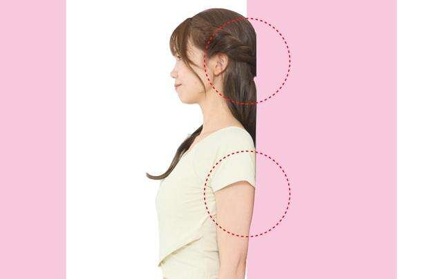
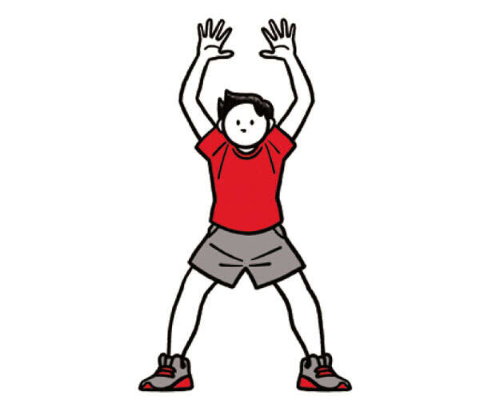
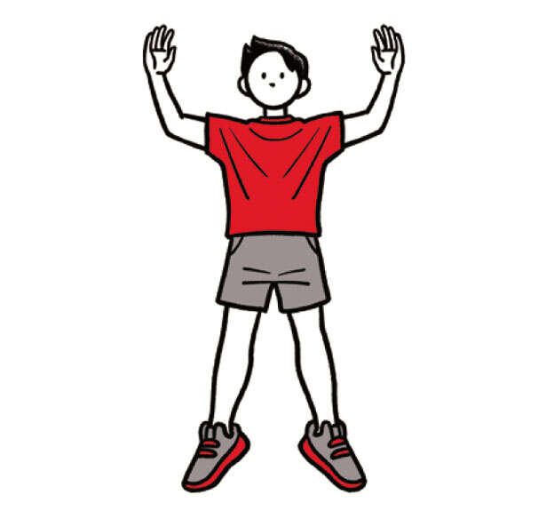
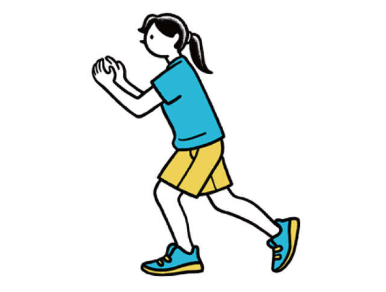
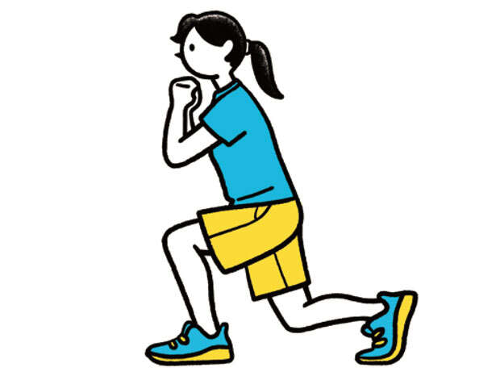
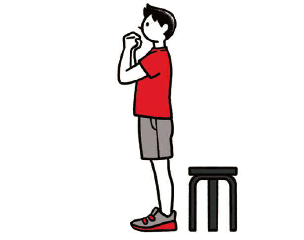

含有关键字“KADOKAWA”的文章
1-
低压扰乱自主神经，浑身不舒服…… 发布日期：
走路的方式是导致肚子胀的原因之一！抬起你的腹部并伸展你的膝盖......
-

低压扰乱自主神经，浑身不舒服…… 发布日期：饮食要循序渐进！成功减重10公斤的教练讲授“如何爬楼梯”……
-

低压扰乱自主神经，浑身不舒服…… 发布日期：如何训练你的“足底练习”和“核心”，打造受用一生的双腿【步行课程...
-

低压扰乱自主神经，浑身不舒服…… 发布日期：“不蹲脚后跟”的人要小心了！重置脚踝僵硬的简单步骤...
-

低压扰乱自主神经，浑身不舒服…… 发布日期：【“正确姿势”7步】步行教练教“终身保持肥胖……”
-

低压扰乱自主神经，浑身不舒服…… 发布日期：【30秒检查你的姿势】不用换衣服，不用做肌肉训练，只需改变走路的方式...
-
 低压扰乱自主神经，浑身不舒服…… 发布日期：
低压扰乱自主神经，浑身不舒服…… 发布日期：只有10%的人能够“正确行走”！你走路的样子让你看起来很老
-

低压扰乱自主神经，浑身不舒服…… 发布日期：获得一个可以让你迈出下一步的身体！恢复趋于衰退的敏捷性的“节奏爵士乐”......
-

低压扰乱自主神经，浑身不舒服…… 发布日期：增加骨质密度，预防骨折！ “节奏跳跃”从每天30秒开始……
-

低压扰乱自主神经，浑身不舒服…… 发布日期：对于那些担心膝盖问题的人。有效强化核心和下半身的“后退步”...
-

低压扰乱自主神经，浑身不舒服…… 发布日期：对于感觉不稳定和行走困难有效！对膝盖温和并训练单腿的“背部”......
-

低压扰乱自主神经，浑身不舒服…… 发布日期：为“终生受益的腿部和臀部”打下基础。 “站立运动”有效训练你的下半身...